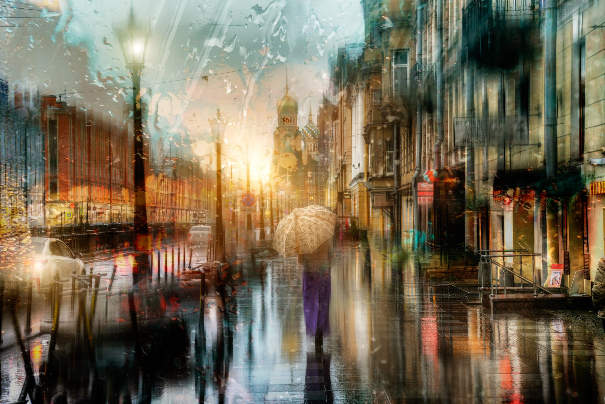

Вновь улыбаюсь, как безумец,
Когда в природе тишь, да гладь,
Под запах этих мокрых улиц,
Я мог бы долго так стоять,
И слушать дробь осенних капель,
По лужам прыгать, как дурак,
Берез и лип зажженный факел,
Вечерний красил полумрак,
Я как глупец, влюбленный снова,
Стоял в рубашке, без зонта,
Не мог сказать тебе ни слова,
Под звук осеннего дождя,
А ты меня не понимала,
Что я люблю сей странный миг,
А мне прохлады не хватало,
Напитков теплых, умных книг,
Гудки... ты положила трубку,
А я стоял един с дождем,
И все вокруг казалось хрупким,
Забытым до рассвета сном.
